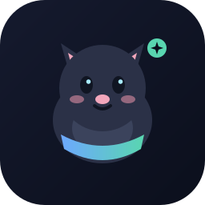

DSH Pet
应用内桌面宠物：余额、本会话 token、上下文占用与提醒。Runs inside the DSH Web / Desktop client.
DSH 0.2.x
MIT
No telemetry
Local-only stats
余额与 token
常驻状态牌显示余额、本会话 token 与上下文占用环；点击直达用量/充值页。
任务列表
当前会话的后台任务和正在执行的工具调用显示在宠物上方；有任务时宠物抱着笔记本进入忙碌姿态。
桌面定位
位置按屏幕坐标保存；移动 DSH 窗口时桌宠留在你放下的位置，不会被窗口带走。
聪明提醒
余额不足、上下文 80%/90%、轮次完成/失败、等待审批或回答，都会有对应气泡。
可换肤
三套内置原创矢量皮肤，支持导入 png/jpeg/webp/gif 图片皮肤，格式开放。
专注与喝水
番茄钟、休息与喝水提醒；绝对截止时间，切到后台也不漂移。
安装 / Install
先通过 GitHub 安装到 Web profile，然后重启 DSH 并在「插件」页启用。
# 1) 直接从 GitHub 安装
dsh plugin --profile web add github:MiaoShuYo/dsh-pet
# 2) 或从 Release 预构建包安装
dsh plugin --profile web add <release-tgz-url>
# 3) 或把下面这个索引加进「插件 → 发现」
…/index.json「发现」页需要先在插件页打开实验性的「自定义插件市场」组合包。安装后需完全退出并重启 DSH 桌面应用及其 Host 进程，浏览器刷新不足以加载新的 Host 插件。